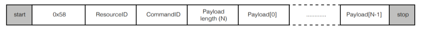
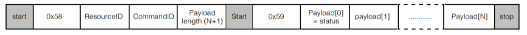

Command transport protocol¶
Transport protocol for control parameters¶
Control parameters are converted to an array of bytes in network byte order (big endian) before they’re sent over the transport protocol. For example, to set a control parameter to integer value 305419896 which corresponds to hex 0x12345678, the array of bytes sent over the transport protocol would be {0x12, 0x34, 0x56, 0x78}. Similarly, a 4 byte payload {0x00, 0x01, 0x23, 0x22} read over the transport protocol is interpreted as an integer value 0x00012322.
In addition to the control parameters values, commands include Resource ID, the Command ID and Payload Length fields that must be communicated from the host to the device. The Resource ID is an 8-bit identifier that identifies the resource within the device that the command is for. The Command ID is an 8-bit identifier used to identify a command for a resource in the device. Payload length is the length of the data in bytes that the host wants to write to the device or read from the device.
The payload length is interpreted differently for GET_ and SET_ commands. For SET_commands, the payload length is simply the number of bytes worth of control parameters to write to the device. For example, the payload length for a SET_ command to set a control parameter of type int32 to a certain value, would be set to 4. For GET_ commands the payload length is 1 more than the number of bytes of control parameters to read from the device. For example, a GET_ command to read a parameter of type int32, payload length would be set to 5. The one extra byte is used for status and is the first byte (payload[0]) of the payload received from the device. In the example above, payload[0] would be the status byte and payload[1]..payload[4] would be the 4 bytes that make up the value of the control parameter.
The table below lists the different values of the status byte and the action the user is expected to take for each status:
Re turn code |
Va lue |
Description |
|---|---|---|
ctrl _done |
0 |
Read command successful. The payload bytes contain valid payload returned from the device |
ctrl _wait |
1 |
Read command not serviced. Retry until ctrl_done status returned |
ctrl _inv alid |
3 |
Error in read command. Abort and debug |
Return code |
Values |
Description |
|---|---|---|
ctrl_done |
0 |
Read command successful. The payload bytes contain valid payload returned from the device |
ctrl_wait |
1 |
Read command not serviced. Retry until ctrl_done status returned |
ctrl_invalid |
3 |
Error in read command. Abort and debug |
The GET_commands need the extra status byte since the device might not return the control parameter value immediately due to timing constraints. If that is the case the status byte would indicate the status as ctrl_wait and the user would need to retry the command. When returned a ctrl_wait, the user is expected to retry the GET_ command until the status is returned as ctrl_done. The first GET_command is placed in a queue and it will be serviced by the end of each 15ms audio frame. Once the status byte indicates ctrl_done, the rest of the bytes in the payload indicate the control parameter value.
Transporting control parameters over I2C¶
This section describes the I2C command sequence when issuing read and write commands to the device.
The first byte sent over I2C after start contains the device address and information about whether this is an I2C read transaction or a write transaction. This byte is 0x58 for a write command or 0x59 for a read command. These values are derived by left shifting the device address (0x2c) by 1 and doing a logical OR of the resulting value with 0 for an I2C write and 1 for an I2C read.
The bytes sequence sent between I2C start and stop for SET_ commands is shown in the figure below.
For GET_ commands, the I2C commands sequence consists of a write command followed by a read command with a repeated start between the 2 commands. The write command writes the resource ID, command ID and the expected data length to the device and the read command reads the status byte followed by the rest of the payload that makes up the control parameter value. The figure below shows the I2C bytes sequence sent and received for a GET_ command.
Transporting control parameters over USB¶
Use the vendor_id 0x20b1, product_id 0x0014 and interface number 3 to initialize for USB. The API function libusb_control_transfer() is used for transporting over USB. When calling libusb_control_transfer(), wIndex corresponds to the Resource ID, wValue is the Command ID and wLength is the payload length.
Floating point to fixed point (Q format) conversion¶
Numbers with fractional parts can be represented as floating-point or fixed-point numbers. Floating point formats are widely used but carry performance overheads. Fixed point formats can improve system efficiency and are used extensively within the XVF3610. Fixed point numbers have the position of the decimal point fixed and this is indicated as a part of the format description.
In this document, Q format is used to describe fixed point number formats, with the representation given as Qm.n format where m is the number of bits reserved for the sign and integer part of the number and n is the number of bits reserved for the fractional part of the number. The position of the decimal point is a trade-off between the range of values supported and the resolution provided by the fractional bits.
The dynamic range of Qm.n format is -2m-1 and 2m-1-2-n with a resolution of 2-n
To convert a floating-point format number to Qm.n format fixed-point number:
Multiply the floating-point number by 2m
Round the result to the nearest integer
The resulting integer number is the Qm.n fixed-point representation of the initial floating-point number
To convert a Qm.n fixed-point number to floating-point:
Divide the fixed-point number by 2m
The resulting decimal number is a floating-point representation of the fixed-point number.
Converting a number into fixed point format and then back to a floating point number may introduce an error of up to ±2-(n+1)
Example:
To represent a floating-point number 14.765467 in Q8.24 format, the equivalent fixed-point number would be 14.765467 x 224 = 247723429.2 which rounds to 247723429.
To get back the floating-point number given the Q8.24 number 247723429, calculate 247723429 ÷ 224 and get back the floating-point number as 14.76546699. The difference of 0.00000001 is correct to with the error bounds of ±2-25 which is ±0.00000003